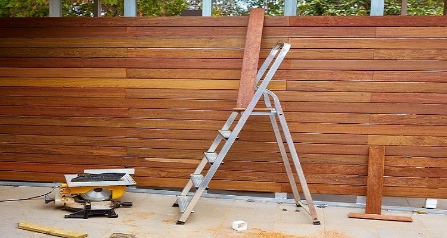
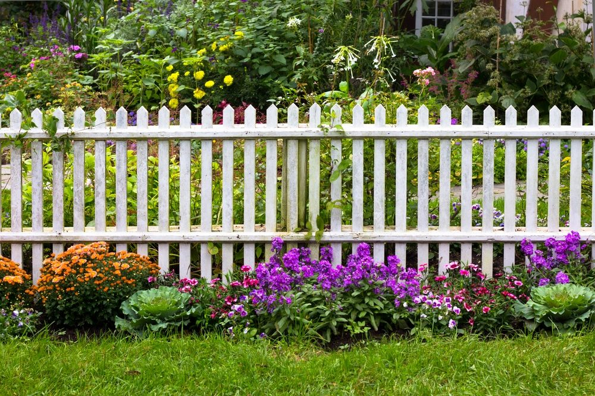

In This Guide
- A wood fence often lasts around 15 years, and good materials, careful installation, and steady upkeep can push it to 20 years or more.
- Pressure-treated posts, gravel for drainage, and concrete set above ground level keep the parts that touch soil from rotting.
- Stain, do not paint, and plan to re-stain every three to five years with a product that blocks UV light.
- Clean the fence every two to three years with mild detergent, and inspect it often for moss, mildew, and loose posts.
Wood is a favorite fence material for good reasons: natural beauty, plenty of style choices, and a friendly price. It also asks for more upkeep than any other option, because wood is open to rot, warping, cracking, and insect damage.
New Orleans adds heat, heavy rain, and constant humidity to that list. Here is how the team at Big Easy Fence thinks about getting the most years out of a wood fence, from the day it goes in to the cleaning schedule that follows.
How Long a Wood Fence Lasts
Neighborhoods across New Orleans are full of wood fences, and one of the most popular styles is the picket fence with a pointed or Gothic top, often seen in front yards. A common rule of thumb puts the life of a wood fence at about 15 years. With quality lumber, a solid installation, and regular maintenance, it can last 20 years or more.
The gap between those numbers is mostly about moisture. Anything that keeps water and insects away from the wood adds years, and the tips below all aim at that.
Install It Right the First Time
Once you have picked a type of wood, the installation decides how well it holds up. A strong post matters most, because if a wood post rots and fails, the whole fence fails with it.
Choose and Set the Posts Carefully
- Use pressure-treated posts. Posts sit in constant contact with soil, moisture, and insects. Pressure treatment adds preservatives that help them resist water and bugs.
- Seal every cut end. When you cut pressure-treated lumber, brush a liquid wood preservative on the exposed wood.
- Keep posts close enough. Spacing them no more than about 7 feet apart helps keep rails from sagging.
- Reinforce gate posts. Use longer posts on both sides of a gate and add a cross brace, so the weight of the gate does not pull the post over.

Give Water Somewhere to Go
A layer of gravel at the bottom of each post hole improves drainage and protects the base of the post from sitting in water. Concrete poured over the gravel and finished a couple of inches above ground level keeps the wood from touching the soil at all.
Fasteners count too. Stainless steel fence screws cost more than nails, but they resist rust and will not react with the stain on the boards.
Stain the Fence, Do Not Paint It
Paint forms a film that can trap moisture behind it and start rot over time. A quality stain soaks into the wood instead, protecting it from moisture and sunlight while bringing out the natural color and grain. If you are still deciding on a product, this breakdown of choosing the best wood stain for fences covers the options.
Staining Tips That Pay Off
- Coat every surface. Stain the framing, notches, cuts, and the fence boards themselves.
- Start before the boards go up. Rolling stain onto the framing with a foam roller before the boards are installed reaches spots you cannot get to later.
- Dip the board ends. Soaking the bottom of each board in stain before installing it protects the part that gets wettest.
- Pick a water-repellent stain with UV protection. Wax-based, pigmented stains slow water absorption, and UV blockers help keep the wood from turning gray.
- Re-stain on a schedule. Every three to five years works well for protection, appearance, and life expectancy.
Clean the Fence Every Two to Three Years
Regular cleaning keeps dirt, moss, mildew, and graying from settling in. New Orleans humidity makes mildew a fair bet on any shaded stretch of fence, so it pays to stay ahead of it.

- Scrub off growth. Remove moss and any peeling finish before it spreads.
- Wash with a mild detergent solution. Use a soft brush, then rinse well. Follow the label on any mildew treatment you add, and wear gloves and eye protection.
- Check as you go. Look for soft spots near the ground, loose boards, and posts that have started to lean.
- Walk the fence after storms. Heavy rain and wind can loosen posts and open gaps, and catching them early keeps small problems small.
For more habits that keep moisture out, read these tips for protecting a wooden fence against rotting.
Keep Your Fence Going Past 20 Years
A wood fence is a rewarding thing to maintain, since it lifts the curb appeal of your home or business. Install it correctly, stain it with a good product, and clean and inspect it on a schedule, and there is no reason a well-built fence cannot outlast the typical lifespan.
When a repair looks bigger than a weekend job, or you would rather hand off the work, a professional crew can take it from there. Learn more about our residential fencing services or ask for a free estimate.
Ready to Protect Your Wood Fence?
Tell us about your fence and what you are seeing, and we will help you decide between upkeep, repair, and a fresh start.